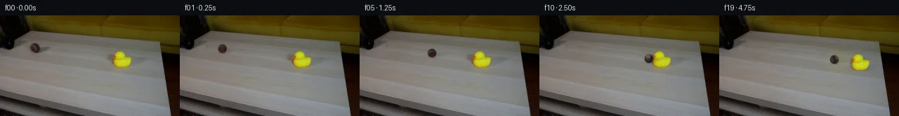

![首帧]()

Round 00
2026-11-04T19:50:14.857595+00:00像素候选变化代码 +192/−0inspection 更新
pixels 4df151f07ccd3545 · code 006b8da2c2b4e299
查看本轮 generate.py 真实 diff
--- previous/generate.py
+++ current/generate.py
@@ -0,0 +1,192 @@
+"""Photographic pixel continuation using only the supplied first frame.
+Local table reconstruction, source-color sprite matting, sphere rotation,
+fixed lighting, and an analytic collision/drag/rocking animation.
+"""
+from pathlib import Path
+import json
+import numpy as np
+from PIL import Image, ImageDraw
+import cv2
+from scipy.ndimage import map_coordinates
+from artifact_io import save
+
+ROOT = Path(__file__).resolve().parent
+H, W = 144, 256
+im = np.array(Image.open(ROOT/'first_frame.png').convert('RGB'), dtype=np.float64)
+yy, xx = np.mgrid[:H, :W].astype(float)
+
+
+def repair_table(image, polygon, offset, bounds):
+ """Shift a neighboring strip along the boards and fit its color at the collar."""
+ mask = np.zeros((H,W), np.uint8)
+ cv2.fillPoly(mask, [np.array(polygon, np.int32)], 1)
+ # A four-pixel transition lies outside the full removal polygon.
+ dist = cv2.distanceTransform(1-mask, cv2.DIST_L2, 5)
+ blend = np.where(mask, 1., np.exp(-(dist/1.8)**2))
+ blend[dist > 5] = 0
+ sx = xx-offset[0]; sy = yy-offset[1]
+ shifted = np.stack([map_coordinates(image[...,c], [sy,sx], order=1, mode='nearest') for c in range(3)], -1)
+ x0,y0,x1,y1 = bounds
+ collar = (xx>=x0)&(xx<x1)&(yy>=y0)&(yy<y1)&(dist>3)&(dist<10)
+ xn = (xx-(x0+x1)/2)/max(1,x1-x0)
+ yn = (yy-(y0+y1)/2)/max(1,y1-y0)
+ basis = np.stack([np.ones_like(xx),xn,yn,xn*yn,xn*xn,yn*yn],-1)
+ delta = image-shifted
+ coef = np.linalg.lstsq(basis[collar], delta[collar], rcond=None)[0]
+ # Robust re-fit rejects small original shadow remnants at the collar.
+ error = np.linalg.norm(delta[collar]-basis[collar]@coef,axis=1)
+ good = error < np.quantile(error,.85)
+ coef = np.linalg.lstsq(basis[collar][good],delta[collar][good],rcond=None)[0]
+ fill = np.clip(shifted+basis@coef,0,255)
+ return image*(1-blend[...,None])+fill*blend[...,None]
+
+# The repair boundaries include the original object and its contact/cast shadow.
+ball_clean = repair_table(im,[(41,38),(58,38),(73,45),(72,53),(58,56),(41,55)],(-31,-4.7),(31,30,84,64))
+clean = repair_table(ball_clean,[(156,49),(183,47),(193,57),(205,64),(204,76),(189,82),(159,79),(149,65)],(46,7.0),(139,41,215,91))
+
+# Source duck matte: use yellow/orange chroma, the measured silhouette, and
+# recovered table color to decontaminate translucent boundary pixels.
+chroma = (im[...,0]+im[...,1])/2-im[...,2]
+domain = (xx>=158)&(xx<=190)&(yy>=48)&(yy<=78)
+binary = (chroma>43)&domain
+beak = (xx>=160)&(xx<=167)&(yy>=56)&(yy<=64)&((im[...,0]-im[...,1])>8)&((im[...,0]-im[...,2])>28)
+binary |= beak
+binary = binary.astype(np.uint8)
+count,labels,stats,centroids=cv2.connectedComponentsWithStats(binary)
+if count>1:
+ binary=(labels==(1+np.argmax(stats[1:,cv2.CC_STAT_AREA]))).astype(np.uint8)
+# Estimate antialiasing from chroma in a one-pixel outer band.
+inner = cv2.erode(binary,np.ones((3,3),np.uint8))
+outer = cv2.dilate(binary,np.ones((3,3),np.uint8))
+bgchroma=(clean[...,0]+clean[...,1])/2-clean[...,2]
+expected = np.clip(178-(yy-54)*1.25,146,180)
+expected[beak]=92
+alpha = np.clip((chroma-bgchroma)/(expected-bgchroma+1e-5),0,1)*outer
+alpha = np.maximum(alpha,inner)
+alpha = cv2.GaussianBlur(alpha,(3,3),.32)
+alpha[~domain]=0
+foreground = np.clip((im-clean*(1-alpha[...,None]))/np.maximum(alpha[...,None],.03),0,255)
+premult = foreground*alpha[...,None]
+
+# A softly shaded sphere uses the actual photographed ball colors as its
+# surface texture. The unseen hemisphere is mirrored from the visible one.
+BCX, BCY, RAD = 50.1,46.1,6.25
+light = np.array([-.55,-.55,.63]); light/=np.linalg.norm(light)
+axis = np.array([-.15,1.,0.]); axis/=np.linalg.norm(axis)
+dirvec = np.array([1.,.15]); dirvec/=np.linalg.norm(dirvec)
+
+
+def sphere(cx,cy,travel):
+ # Supersampling integrates the sphere edge and rotating texture.
+ scale=4; size=18
+ gx,gy=np.meshgrid(np.arange(size*scale)/scale+.5/scale-9,
+ np.arange(size*scale)/scale+.5/scale-9)
+ nx=gx/RAD; ny=gy/RAD
+ q=nx*nx+ny*ny
+ a=np.clip((1-np.sqrt(q))*RAD*scale+.5,0,1)
+ nz=np.sqrt(np.maximum(0,1-q))
… diff truncated; 105 more lines …